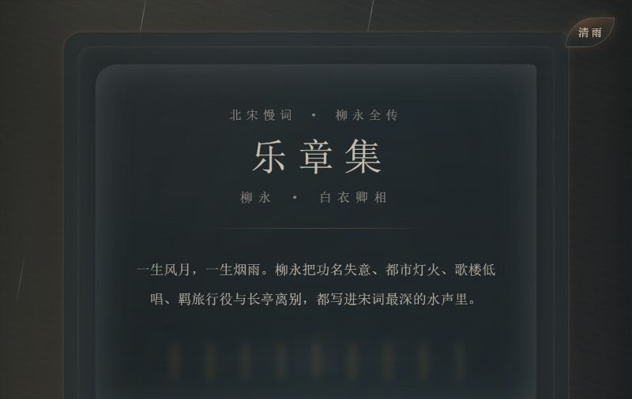
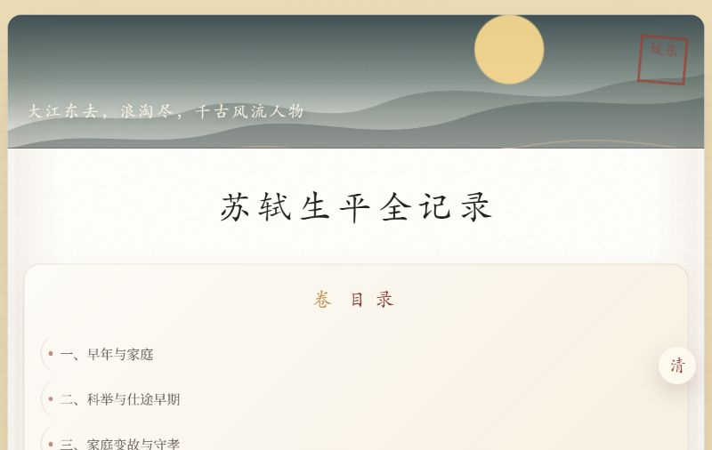
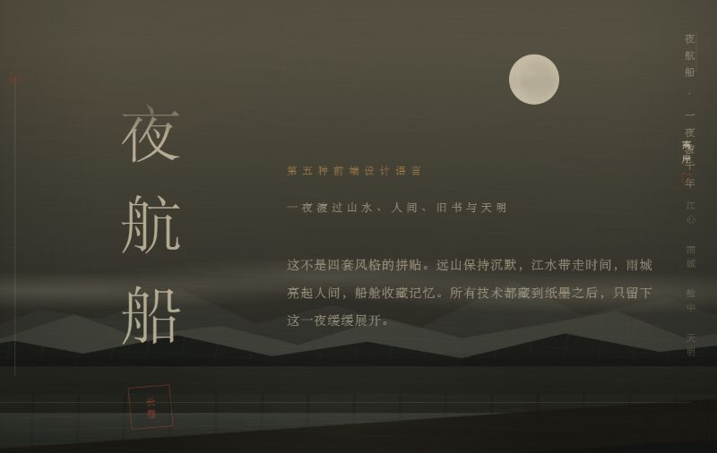

CURATORIAL NOTE · 阅览序
先辨气息，再入正文
暗室用灯与门推进空间，柳永在烟雨里展开卷册，苏轼以文献长页承载章节， 王维留下山水间的气口，夜航船把五幕藏进连续滚动。
页面可运行，不等于内容已经完成学术校勘。展签中的日期只表示 正文最后一次实质修订；纯 CSS、JavaScript、响应式与部署修复不会推进该日期。
THE COLLECTION · 五种叙事
在线展卷
作品将在新标签打开，展厅保留在当前页面。



EDITORIAL BOUNDARY · 编辑边界
视觉可以先成立，事实仍需继续校勘。
这些页面是可运行的前端实验，不是组件库、生产模板或已经完成学术校勘的数字人文成果。 自动化检查能够证明页面可访问、无明显溢出和运行异常，不能代替资料来源、引文归属与事实核验。